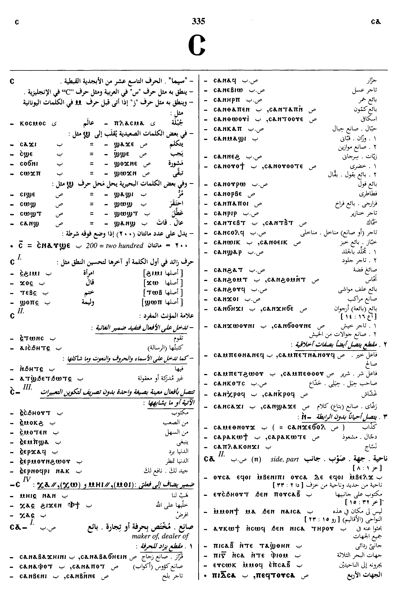
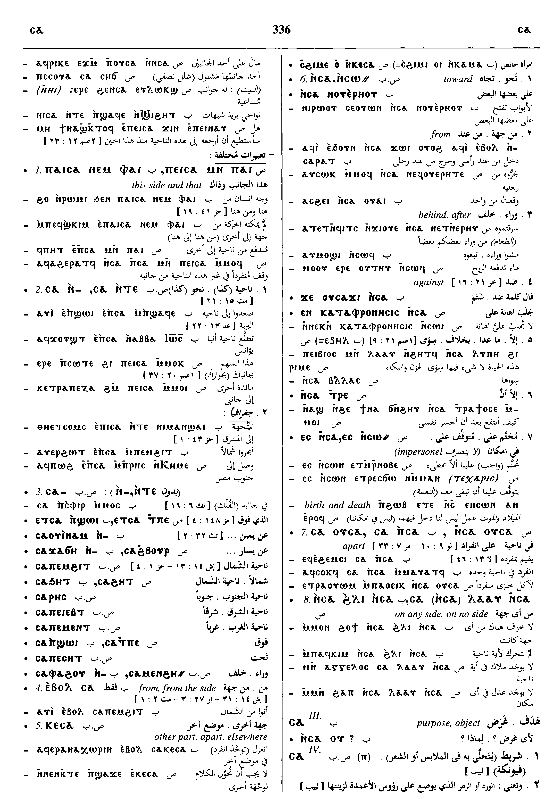
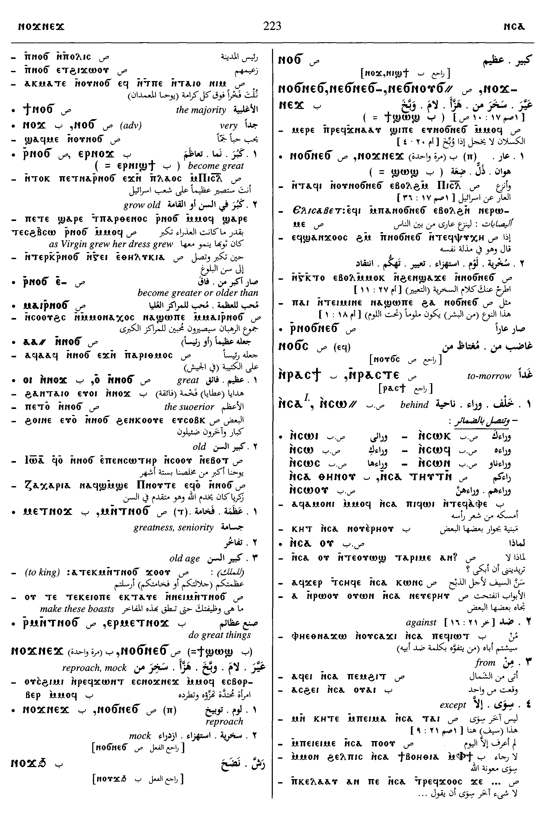
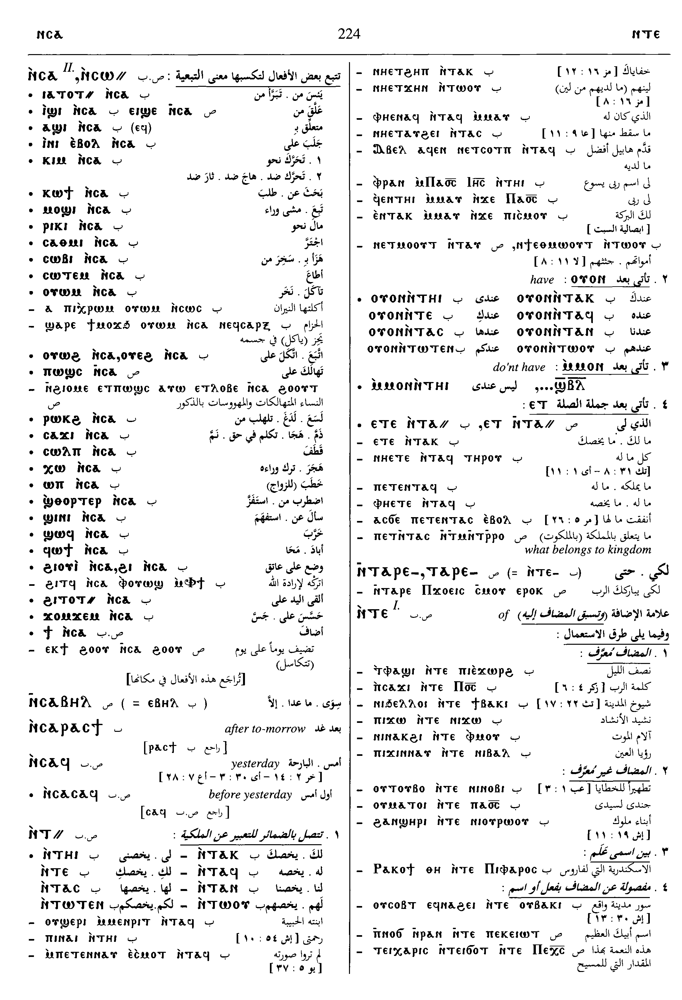
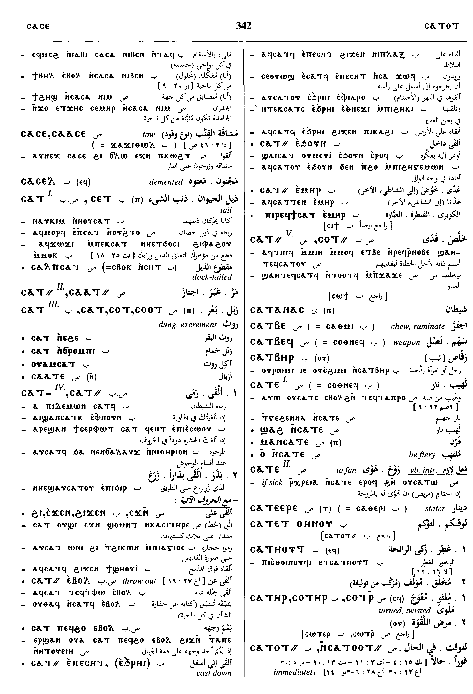

(noun male)
direction
side, part [μερος, κλιμα]
complete
| ⲉⲃⲟⲗ ⲥⲁ- B | from the side, from [απο]1671 | Crum: 313b | |||||||
| ⲕⲉⲥⲁ SB | other part, apart, elsewhere1672 | ||||||||
| ⲛⲥⲁ- SLBFO
ⲥⲁ- LB ⲉⲥⲁ- F ⲛⲥⲉ- A ⲥⲉ- AF ⲛⲥⲱ⸗ SALBF plural: ⲛⲥⲱⲧⲛ, ⲛⲥⲁⲧⲏⲩⲧⲛ S |
(preposition)behind, after lit or figur S, independent of vb
― against ― rarely from except, beyond S,A,B,F [ει μη, η, αλλα η, αλλα και, πλην, πλειον η] with impers ⲉⲥ-, it is (incubent, depends) upon1673 |
Crum: 314a | |||||||
| ⲛⲥⲁⲥⲁ ⲛⲓⲙ, ⲥⲁⲥⲁ ⲛⲓⲙ S
ⲥⲁⲥⲁ ⲛⲓⲃⲉⲛ B ⲛⲥⲁⲥⲉ ⲛ. F |
on every side1674 | ||||||||
| ⲛⲥⲁⲟⲩⲥⲁ SF
ⲛⲥⲁⲩⲥⲁ S [Mark; 2; 4; 34; ⲁϫⲛⲡⲁⲣⲁⲃⲟⲗⲏ ⲇⲉ ⲙⲉϥϣⲁϫⲉ ⲛⲙⲙⲁⲩ ⲛⲥⲁⲩⲥⲁ ⲇⲉ ϣⲁϥⲃⲟⲗⲟⲩ ⲧⲏⲣⲟⲩ ⲉⲛⲉϥⲙⲁⲑⲏⲧⲏⲥ] [Mark; 2; 6; 31; ⲡⲉϫⲉ ⲓⲏⲥⲟⲩⲥ ⲇⲉ ⲛⲁⲩ ϫⲉ ⲁⲙⲏⲓⲛ ⲛⲧⲱⲧⲛ ⲛⲥⲁⲩⲥⲁ ⲉⲩⲙⲁ ⲛϫⲁⲓⲉ] ⲥⲁⲟⲩⲥⲁ SB ⲥⲁⲡⲥⲁ B |
on a side, apart [εν μερει, κατ ιδιαν]1675 | ||||||||
| ⲛⲥⲁⲗⲁⲁⲩ ⲛⲥⲁ, ⲥⲁⲗⲁⲁⲩ ⲛⲥⲁ S
ⲛⲥⲁϩⲗⲓ ⲛⲥⲁ B |
on any (no) side1676 | Crum: 314b | |||||||
| ⲙⲛⲛⲥⲁ- SLFO
ⲛⲙⲛⲥⲁ- S ⲙⲉⲛⲉⲛⲥⲁ- BF ⲙⲉⲛ(ⲛ)ⲉⲥⲁ- F ⲙⲛⲛⲥⲉ- NH [codex II - The Apocryphon of John; 106; 26; 14; ⲁϫⲛⲧⲥ ⲅⲁⲣ ⲙⲛ ϭⲟⲙ ⲛⲧⲉⲗⲁⲁⲩ ⲁϩⲉ ⲉⲣⲁⲧϥ ⲙⲛⲛⲥⲉ ⲧⲟⲩϫⲡⲟⲟⲩ] ⲙⲉⲛⲉⲥⲱ⸗ SABF |
after of time
― with nn or pron [μετα, οπισω, επεκεινα, επειτα, υστερον] ―― ⲙ. ... ⲉⲃⲟⲗ S, meaning same ― with ⲧⲣⲉ- (ⲉⲧⲣⲉ-, ⲡⲧⲣⲉ-) S, ⲛⲧⲉ- A, ⲧⲉ- L, ⲑⲣⲉ- B, ⲉⲧⲣⲉ- F + vb [μετα το, δια το]1677 |
||||||||
| ⲙⲛⲛⲥⲱⲥ SAL
ⲙⲉⲛⲉⲛⲥⲱⲥ BF ⲙⲛ(ⲛ)ⲥⲟⲥ F |
afterward [μετα τουτο, ειτα, επειτα]1678 | Crum: 315a | |||||||
See also:
| view | ⲥⲡⲓⲣ SAL ⲥⲫⲓⲣ B ⲥⲡⲓⲗ F plural: ⲥⲡⲓⲣⲟⲟⲩⲉ S plural: ⲥⲡⲓⲣⲉⲩⲉ A plural: ⲥⲡⲓⲣⲱⲟⲩⲓ B plural: ⲥⲡⲓⲣⲁⲩⲉ Sf plural: ⲥⲡⲓⲗⲁⲩⲉⲓ F | (noun male) rib [πλευρα, πλευρον]
side [μερος] as prep + ⲥⲁ-, beside302 |
Dawoud: 335b - 336b, 223b - 224a, 341b - 342a, 144b






